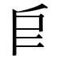
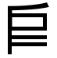
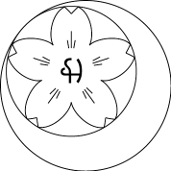
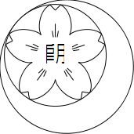

|
京極
●概要
京極はアルティア人の表意文字で、地球の漢字に相当するものである。sm（中世）でアルバザードに伝わった。アトラスで最も字数が多く複雑な文字であり、同時に最も洗練された文字でもある。詳細は幻日mana(2)を参照のこと。
フォントはセリフのkozue（桜京極）とサンセリフのyuki（漿京極）の2種類がある。以下に「弓」に当たる文字を示す。
・桜京極の弓(van)

・漿京極の弓(van)

●幻日における京極
幻日における京極の記述法については、mana(2)の文化欄の＜［京極］タグ＞を参照されたい。
次に、実例として幻日のvan,altを転記する。意味はアルティア語で「弓」である。
van,alt
［アイテム］voz
［京極］弓：象形。戦場において武将が目下の敵武将を射下ろすように狙っている様子を象ったもの。この文字は射法八節(xelsikle)の会(leeve)から来ている。離れ(viine)に入れば即座に射抜くことができるため、「すぐに」や「まもなく」を意味するayumi,altの文字は弓偏に時という旁からできている。なお、この象形文字は四角の部分が人間の頭で、縦棒の部分が体を表している。二本の横棒は弓手と矢を象徴し、頭部の斜線は馬手を象徴する。老婆心ながら、この文字はあくまで象形であり、厳密に言えば実際に会の段階に入っても馬手がこのように頭の上に来ることはなく、まして会の段階で馬手側の肘が伸びることはない。
<>viine
●作例
京極はアルバザード国内でも使用される。ただし同じアルバザード人でも出身や学力によって京極の認知度は異なる。
京極が使われるのは主に広告やデザインや看板などであり、アルカで書かれた文章に登場することはあまりない。というのも、京極はアルカの文字でなくアルティア語の文字だからである。
以下はfelixia（フェリシア学院）の校章である。フェリシアの校章には幼字版と京極版の2種類がある。
校章は桜と弓張りの月が図示されており、更に桜の内部には文字が書かれている。幼字のほうはleivent（弓道）における射法八節の会の象形である。アルティア弓に合わせ、弓の上部が下部より長くなっている。一方、京極のほうは「弓月」という意味の二文字で形成されている。
・幼字版

・京極版

注：幼字版はnias氏との共同デザインで、データの作成は氏によるものです。
|